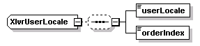

| diagram |  | ||
| namespace | http://www.cisco.com/AXL/API/10.5 | ||
| children | userLocale orderIndex | ||
| used by |
|
||
| source | <xsd:complexType name="XIvrUserLocale"> <xsd:sequence minOccurs="0"> <xsd:element name="userLocale" type="axlapi:XUserLocale" nillable="false" minOccurs="1" maxOccurs="1"/> <xsd:element name="orderIndex" type="axlapi:XInteger" nillable="false" minOccurs="1" maxOccurs="1"/> </xsd:sequence> </xsd:complexType> |
| diagram | |||||
| type | axlapi:XUserLocale | ||||
| properties |
|
||||
| source | <xsd:element name="userLocale" type="axlapi:XUserLocale" nillable="false" minOccurs="1" maxOccurs="1"/> |
| diagram | |||||
| type | axlapi:XInteger | ||||
| properties |
|
||||
| source | <xsd:element name="orderIndex" type="axlapi:XInteger" nillable="false" minOccurs="1" maxOccurs="1"/> |